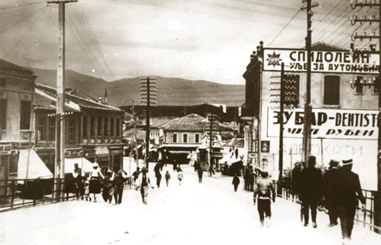
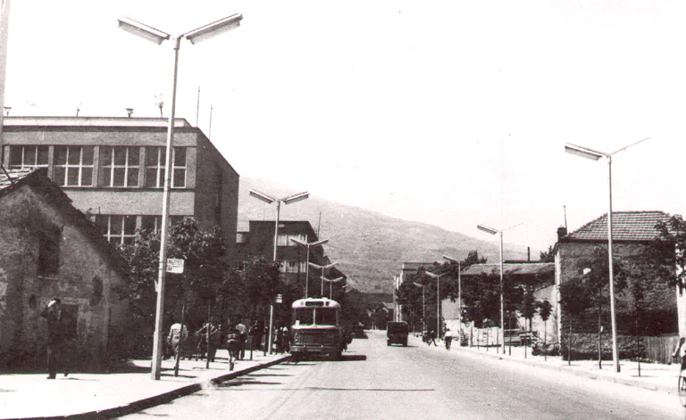

Yeşil Pazar
- Yapım
- UFUŽ ve Prag Belgesel Filmi
- Senaryo ve yönetmen
- Slavko Janevski ve EMAN CANERA
- Yıl
- 1959
- Süre
- 00:18

Üsküp'te Hristiyan evleri - 1870.

Eski Üsküp çarşısının bir bölümü, 1902. Kurşunlu Han'ın önünde kepenkli dükkânlar. Arka planda Gülşen Hamamı'nın kulesi görülüyor.

Biçimlenmekte olan ana cadde (bugünkü "Makedonija" Caddesi, bugünkü Üsküp Şehir Müzesi'nden Taş Köprü'ye uzanır). Sağda Gotik Katolik kilisesi, solda birkaç bina. Taş Köprü yanındaki kısım, Kosova Ovası'na gitmeden önce Üsküp'ü ziyarete gelen Sultan V. Mehmed Reşad geçebilsin diye 1911'de döşendi.

Fotoğraf, Osmanlı İmparatorluğu döneminde 1873'te yapılan eski tren garının - bugünkü Üsküp Şehir Müzesi'nin - binasından çekildi. Ön planda çitle çevrili yeşil alanlarla gara yaklaşım. Ötesinde meydana giden ana cadde. Caddenin başında solda "Rusija" oteli.

"Makedonija" ana caddesine bakış. Kapı önemli bir konuğun onuruna kurulmuş. Solunda "Rusija" oteli var. - 20. yüzyılın başı.

"Moskva" oteliyle ana cadde - 1920'ler

Bugünkü Üsküp Şehir Müzesi'nden meydana uzanan ana cadde, bugünkü Makedonija. Caddenin sonunda Subaylar Evi, sağında Ticaret Odası - 1930'lar.

Bugünkü Üsküp Şehir Müzesi'ne doğru fotoğraflanan ana cadde - 1920 civarı.

Meydandan tren garına doğru ana cadde (bugünkü Makedonija) - 1920 civarı.

Ana cadde Makedonija, bugünkü Üsküp Şehir Müzesi'nden meydana doğru. Solda Bristol oteli, sağda Kranga Sarayı görülüyor. (1930'lar)

Bugünkü Üsküp Şehir Müzesi'nden meydana uzanan ana cadde. Bugünkü "Bristol" oteli ve Kranga Sarayı yanından fotoğraflandı. Arka planda Subaylar Evi - 1935 civarı.

Bugünkü Üsküp Şehir Müzesi'nden meydana uzanan ana cadde. Köşedeki bina Kranga Sarayı - 1930'lar.

Kranga Sarayı. - 1930'lar.

Vardar'ın sağ kıyısında rıhtım boyunca uzanan sokak. - 1930'lar

Şehrin eski kısmında eski çarşıya giden bir sokak - 19. yüzyılın sonu.

Taş Köprü'den eski çarşıya giden sokak. - 1920'ler

Şehrin eski kısmında, Çair mahallesine doğru bir sokak. Ön planda fayton durağı ve eski Türk çeşmesi. Arka planda eski yerel mimariye sahip yapılar - 1920'ler.

Eski çarşıya doğru Taş Köprü. Solda bir dizi dükkân, sağda diş hekimi Dr. Ruben'in binası ve eski çarşıya doğru dükkânlar - 1935 civarı.

Pajko mahallesinde "Kruševska" sokağı, 1920'ler.

Bu sokak bugün mevcut değil. Ana caddeye paralel olarak meydandan eski tren garına (bugünkü Üsküp Şehir Müzesi) uzanıyordu - 1920'ler

Ana cadde (bugünkü "Makedonija") - 1920'ler.

Üsküp'te eski çarşıdan bir sokak. Arka planda Mustafa Paşa Camii. - 1930'lar

Üsküp'te eski çarşıda bir sokak. Arka planda Mustafa Paşa Camii görülüyor. - 1930'lar

Çair semtinde "Cvetan Dimov" sokağı, 1940'lar. Arka planda Mehmet Paşa Camii görülüyor.

Üsküp, 1950'ler. Eski Üsküp çarşısının girişi - "Most" büyük mağazasının yeri. Ön planda 1963 depreminden sonra yıkılan bir grup dükkân. Solda Üsküp Kalesi'nin bir bölümü. Arka planda Mustafa Paşa Camii.

Eski Üsküp çarşısındaki küçük meydan, 1950'ler.

Meydandan bugünkü Makedonya Cumhuriyeti Meclisi'ne doğru fotoğraflanan 11 Ekim Caddesi. Arka planda eski İçişleri İdaresi binası. - 1950'ler

Solda Makedonya Cumhuriyeti Meclisi ile 11 Ekim Caddesi. Solda Orta Çağ kulesi de görülüyor. Fotoğrafın arkasında eski postane binasının bir bölümü. - 1950'lerin sonu

Meydandan fotoğraflanan "Goce Delčev" Caddesi. Ön planda solda 1963 depreminde yıkılan "Makedonija" otelinin bir bölümü görülüyor. - 1950'ler

Meydana doğru ana cadde. Ön planda Katolik kilisesi var. - 1950'ler

Tren garına (bugünkü Üsküp Şehir Müzesi) doğru ana cadde. Solda Katolik kilisesi görülüyor. - 1950'ler

Meydana doğru "Makedonija" ana caddesi. - 1950'ler

Üsküp, 1950. Ana caddenin batı kısmı. Solda "Moskva" oteli.

Ön planda 11 Ekim Caddesi ile Kočo Racin Bulvarı'nın kavşağı. İnşa halindeki kulenin sağında Birinci Dünya Savaşı'ndan kalma eski ordu fırını var - 1950'ler

Kočo Racin bulvarı ile 11 Ekim Caddesi'nin kavşağı. - 1950'ler

Şehir Hastanesi ve İşçi Üniversitesi yanındaki sokak - 1950'ler

11 Ekim Caddesi - 1970'lerin sonu, "Makedonya" Meydanı'na doğru.

11 Ekim Caddesi'nden "Makedonya" Meydanı'na bakış. Solda konut binaları, sağda elektrik işletmesi binası. - 1970'lerin sonu

 Su kemeri4 kartpostal
Su kemeri4 kartpostal Kale30 kartpostal
Kale30 kartpostal Köprüler60 kartpostal
Köprüler60 kartpostal Rıhtım58 kartpostal
Rıhtım58 kartpostal Meydan46 kartpostal
Meydan46 kartpostal Binalar66 kartpostal
Binalar66 kartpostal Hristiyan kiliseleri19 kartpostal
Hristiyan kiliseleri19 kartpostal İslami yapılar33 kartpostal
İslami yapılar33 kartpostal Subaylar Evi29 kartpostal
Subaylar Evi29 kartpostal Tiyatro28 kartpostal
Tiyatro28 kartpostal Tren garı13 kartpostal
Tren garı13 kartpostal Okullar36 kartpostal
Okullar36 kartpostal Parklar12 kartpostal
Parklar12 kartpostal Pazarlar18 kartpostal
Pazarlar18 kartpostal Sokaklar38 kartpostal
Sokaklar38 kartpostal Panorama I60 kartpostal
Panorama I60 kartpostal Panorama II30 kartpostal
Panorama II30 kartpostal Kolajlar55 kartpostal
Kolajlar55 kartpostal Seller9 kartpostal
Seller9 kartpostal Deprem27 kartpostal
Deprem27 kartpostal Üsküp 200026 kartpostal
Üsküp 200026 kartpostal